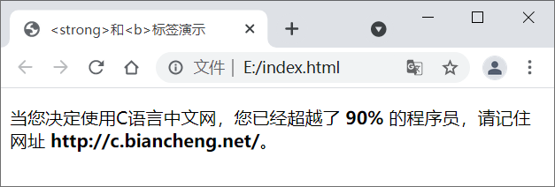
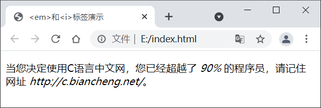

HTML文本格式化
一些 HTML 标签除了具有一定的语义（含义）外，还有默认的样式，例如
HTML 中有许多用来格式化文本的标签，如下表所示：
按照作用的不同，可以将这些用来格式化文本的标签分为两类：
通过上表可以看出，有些标签的呈现效果虽然相同，但语义却不同，例如
示例代码如下所示：
运行结果如下图所示：
示例代码如下：
运行结果如下图所示：
根据 HTML5 的规范，标题应该用
<b>（加粗）、<em>（倾斜）等，通过这些标签我们无需借助 CSS 就可以为网页中的内容定义样式。在这些具有语义和默认样式的标签中，有许多是针对文本的，通过这些标签我们可以格式化文本（为文本添加样式），例如使文本加粗、倾斜或者添加下划线等。HTML 中有许多用来格式化文本的标签，如下表所示：
| 标签 | 描述 |
|---|---|
| <b>...</b> | 加粗标签中的字体 |
| <em>...</em> | 强调标签中的内容，并使标签中的字体倾斜 |
| <i>...</i> | 定义标签中的字体为斜体 |
| <small>...</small> | 定义标签中的字体为小号字体 |
| <strong>...</strong> | 强调标签中的内容，并将字体加粗 |
| <sub>...</sub> | 定义下标文本 |
| <sup>...</sup> | 定义上标文本 |
| <ins>...</ins> | 定义文档的其余部分之外的插入文本 |
| <del>...</del> | 在文本内容上添加删除线 |
| <code>...</code> | 定义一段代码 |
| <kbd>...</kbd> | 用来表示文本是通过键盘输入的 |
| <samp>...</samp> | 定义程序的样本 |
| <var>...</var> | 定义变量 |
| <pre>...</pre> | 定义预格式化的文本，被该标签包裹的文本会保留所有的空格和换行符，字体也会呈现为等宽字体 |
| <abbr>...</abbr> | 用来表示标签中的内容为缩写形式 |
| <address>...</address> | 用来定义文档作者的联系信息，被该标签包裹的文本通常会以斜体呈现，并在文本前面换行 |
| <bdo>...</bdo> | 定义标签中的文字方向 |
| <blockquote>...</blockquote> | 定义一段引用的文本，例如名人名言，文本会换行输出，并在左右两边进行缩进 |
| <q>...</q> | 定义一段短的引用，浏览器会将引用的内容使用双引号包裹起来 |
| <cite>...</cite> | 表示对某个文献的引用，例如书籍或杂志的名称，文本会以斜体显示 |
| <dfn>...</dfn> | 用来定义一个术语，标签中的文本会以斜体呈现 |
按照作用的不同，可以将这些用来格式化文本的标签分为两类：
- 物理标签：这类标签用来为设置文本的外观；
- 逻辑标签：这类标签用来赋予文本一些逻辑或语义值。
通过上表可以看出，有些标签的呈现效果虽然相同，但语义却不同，例如
<strong> 和 <b> 标签、<em> 和 <i> 标签，下面就来详细介绍一下。<strong>和<b>标签之间的区别
默认情况下，<strong> 和 <b> 标签都可以使文本以粗体展示标签中的文本，但是 <strong> 标签的语义是标签中的内容具有很高的重要性，而 <b> 标签的语义仅仅是加粗文本以引起读者的注意，并没有特殊的意思。示例代码如下所示：
<!DOCTYPE html>
<html lang="en">
<head>
<meta charset="UTF-8">
<title><strong>和<b>标签演示</title>
</head>
<body>
<p>当您决定使用C语言中文网，您已经超越了 <strong>90%</strong> 的程序员，请记住网址 <b>http://c.biancheng.net/</b>。</p>
</body>
</html>
此处给90%添加 <strong> 标签是为了强调C语言中文网的重要性，以及它带来的震撼效果；而给网址添加 <b> 标签仅仅是为了视觉上的加粗效果，这样能引起读者的注意。运行结果如下图所示：

图1：<strong> 和 <b> 标签示例
图1：<strong> 和 <b> 标签示例
<em>和<i>标记之间的区别
同样，<em> 和 <i> 标签默认情况下均以斜体显示标签中的文本，但是 <em> 标签具有强调的语义，用来表示标签中的内容很重要，而 <i> 标签仅仅用于定义斜体文本。示例代码如下：
<!DOCTYPE html>
<html lang="en">
<head>
<meta charset="UTF-8">
<title><em>和<i>标签演示</title>
</head>
<body>
<p>当您决定使用C语言中文网，您已经超越了 <em>90%</em> 的程序员，请记住网址 <i>http://c.biancheng.net/</i>。</p>
</body>
</html>
同上例一样，给90%添加 <em> 标签是为了强调C语言中文网带来的震撼效果，而给网址添加 <i> 标签仅仅是为了引起读者的注意。运行结果如下图所示：

图2：<em> 和 <i> 标签示例
图2：<em> 和 <i> 标签示例
根据 HTML5 的规范，标题应该用
<h1> ~ <h6> 标签定义，被强调的文本应该用 <em> 标签定义，重要的文本应该用 <strong> 标签定义，被标记的或者高亮显示的文本应该用 <mark> 标签定义等等，类似这样的规范还有很多，后面我们会一一为大家介绍。关注公众号「站长严长生」，在手机上阅读所有教程，随时随地都能学习。内含一款搜索神器，免费下载全网书籍和视频。

微信扫码关注公众号